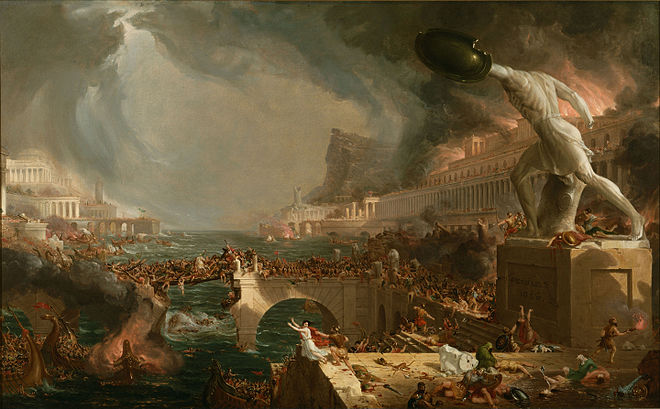
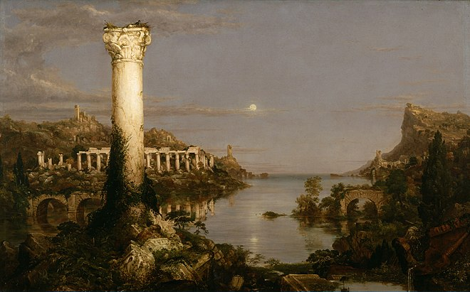

Often great works of art depict scenes on a huge scale especially scenes with gravitas.
The Collapse is a perfect example of this and has been the subject of many great paintings.
It would be wrong to discuss paintings on the Collapse without mentioning Thomas Cole
Destruction, Thomas Cole, 1836

This painting depicts the fall of the roman empire, this is a contemporary piece
that fully encapsulates the dark and troubling themes surrounding the collapse
Desolation, Thomas Cole, 1836

In this painting Cole shows the end state of the collapse, a fallen civilisation that is long forgotten
with only the stone structural remains left, the history, culture, and life has been lost.